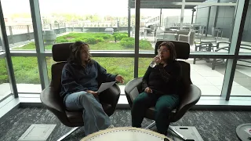

Portfolio
These projects highlight my work in the Digital Studies Certificate at UW–Madison, where I use video, interviewing, and storytelling to make complex technical and social issues more accessible to broader audiences.
Across these projects, I am especially interested in democratizing technical knowledge through media that is clear, human-centered, and meaningful to the general public.
AI and Cybersecurity: Expert Perspectives

AI and Cybersecurity: Expert Perspectives is an interview-based video project built around a conversation with Dr. Rahul Chatterjee, a UW–Madison computer science faculty member specializing in security and privacy. The project examines how everyday use of generative AI tools can unintentionally compromise cybersecurity, especially when users are unaware of data storage, platform practices, and network risk.
In this project, I developed the interview focus, helped shape the questions, and produced the video with the goal of translating expert knowledge into accessible, real-world concerns. One of the key ideas I wanted viewers to take away is that even seemingly simple uses of AI tools can expose sensitive information if people do not understand how those systems handle data.
This project shows how I use digital media to connect technical research with public understanding in a way that feels relevant and approachable.
Equalizing Citizenship: Breaking Stigmas

Equalizing Citizenship: Breaking Stigmas is a documentary-style video interview that challenges common misconceptions about U.S. naturalization by centering lived experience and intergenerational memory. Through an interview with Araceli Esparza, the project traces her family’s migration history, including her grandfather’s participation in the Bracero Program and her aunt’s path to U.S. citizenship.
Although I do not appear on screen in this project, I contributed to the production and storytelling process by helping shape the interview structure and presentation of key moments. I wanted the video to show citizenship not as a simple legal outcome, but as an experience shaped by history, emotion, and larger structural conditions.
This project reflects my interest in using digital storytelling to humanize migration narratives and challenge stigmatized public discourse through careful, interview-based media.